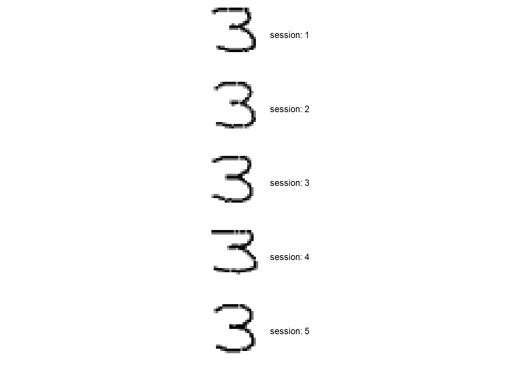
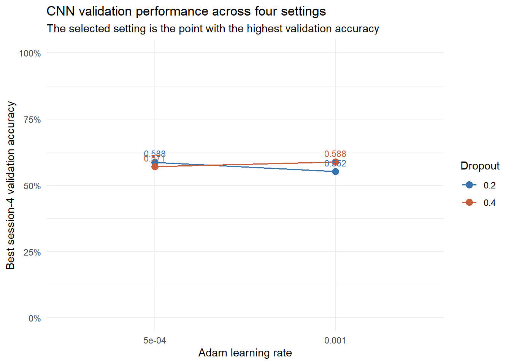
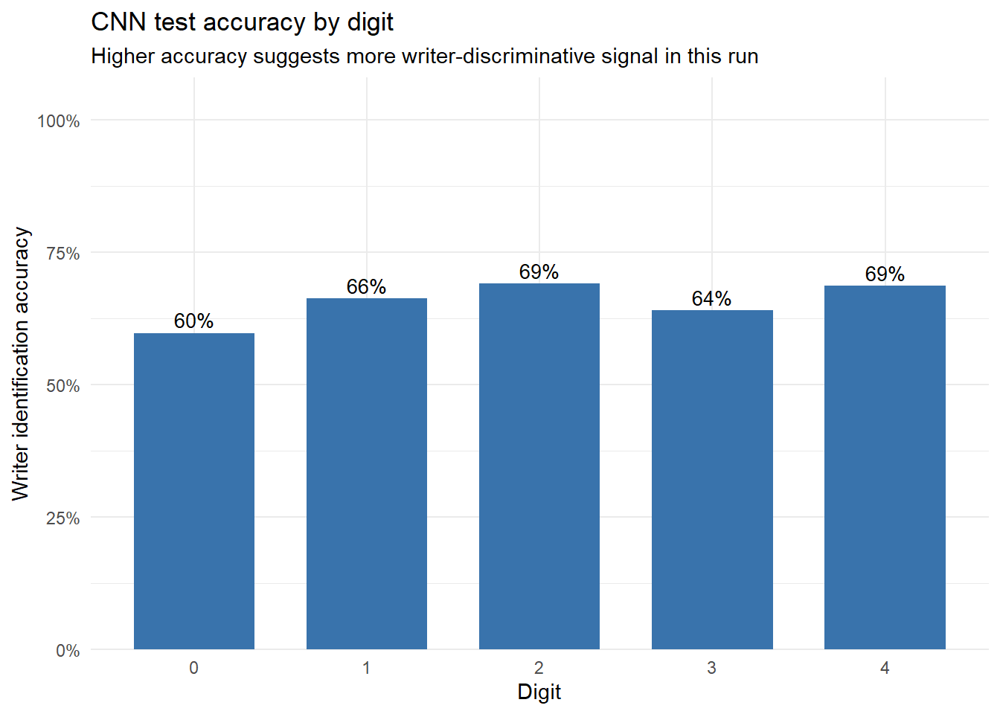
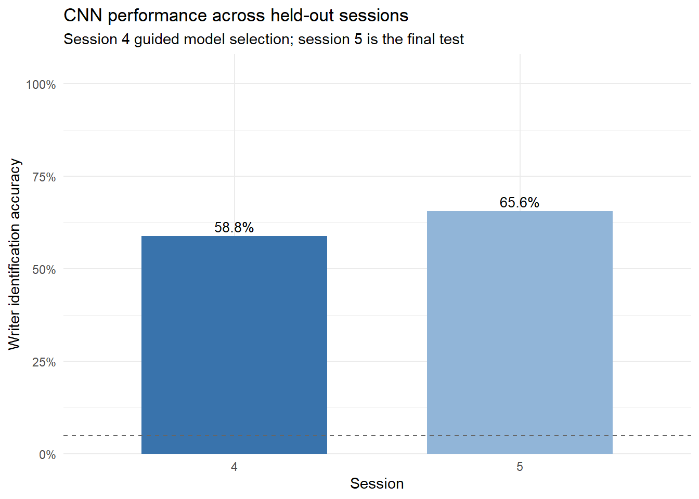
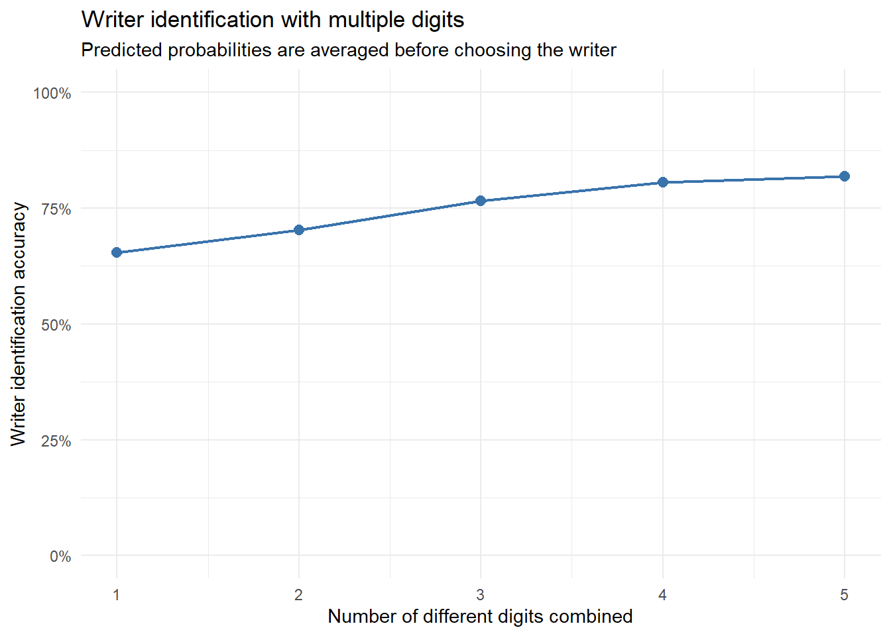
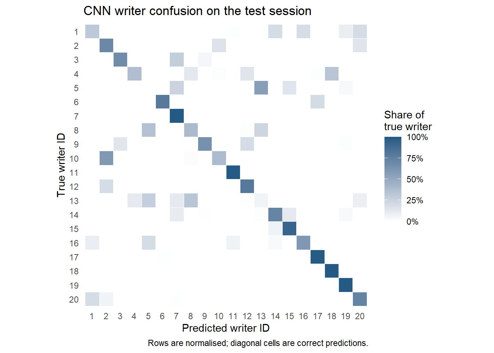
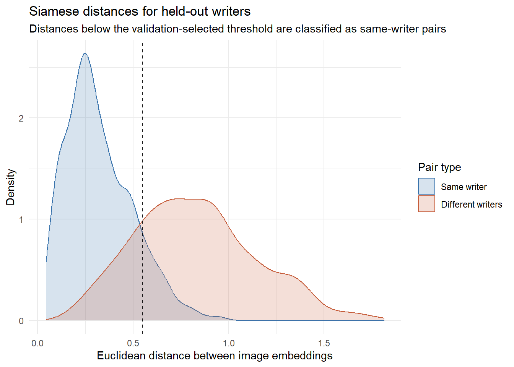

| Data check | Result |
|---|---|
| Image array dimensions | 25000 x 28 x 28 x 1 |
| Scaled pixel range | 0 to 1 |
| Pixels equal to background (0) | 84.7% |
| Distinct pixel levels | 163 |
| Missing metadata values | 0 |
| Images per writer (min to max) | 1250 to 1250 |
| Images per digit (min to max) | 5000 to 5000 |
| Images per session (min to max) | 5000 to 5000 |
| Images per writer-digit-session cell (min to max) | 50 to 50 |
Writer identification and verification from simulated handwritten digits
STA5073Z Data Science for Industry, Assignment 2
1. Data exploration
The dataset contains 25,000 simulated grayscale images from 20 writers. Each image is 28 × 28 pixels, and each writer produced digits 0–4 across five sessions. We use it to compare closed-set writer identification with same-writer verification. These tasks use different test designs, so their accuracy values are not directly comparable.
Structure and balance
The file contains an image array and one metadata row per image. Pixel values are integers from 0 to 255 and are divided by 255 before modelling. The checks below report the dimensions, pixel range, missing metadata, and balance across writers, digits, sessions, and writer–digit–session cells.
What the images look like
The first grid shows one image per digit for five sampled writers in session 1. The second holds the writer and digit fixed and shows examples from each session.


In these examples, the strokes are centred on a mostly empty background. Slant and proportions vary between writers, while a writer’s digit can also change between sessions. Replicates within a writer–digit–session cell can look very similar. These are observations about the displayed examples, not measurements of every image.
Limitations of the simulated data
The images do not represent the variation in pen, paper, cropping, and scanning found in real handwriting. There are only 20 writers and five digits, and each writer–digit–session cell has the same number of images. Replicates within a cell are related observations, so 25,000 images should not be treated as 25,000 independent writing styles. Conclusions below apply to this simulated dataset and the particular splits used.
2. CNN writer identification
Task, split, and model
The task is to predict one of 20 known writer IDs from a single 28 × 28 image. Writer IDs are coded 0–19 for the model. With balanced classes, chance accuracy is 1/20 (5%).
We trained on sessions 1–3 (15,000 images), used session 4 (5,000) for model selection, and reserved session 5 (5,000) for testing. Every writer and digit appears in each split. This tests whether the model recognises known writers in a later session, not whether it can identify a new writer.
The CNN has two convolution and max-pooling blocks (32 and 64 filters), followed by flattening, a 64-unit ReLU layer, dropout, and a 20-class softmax. It uses sparse categorical cross-entropy and Adam. We compared four combinations of dropout (0.2 or 0.4) and learning rate (0.001 or 0.0005), with batches of 64 and early stopping on session-4 validation accuracy (up to 15 epochs, patience 3). Session 5 was not used to select the model.
| dropout | learning_rate | best_validation_accuracy | validation_loss_at_best_accuracy | best_epoch | selected |
|---|---|---|---|---|---|
| 0.2 | 0.001 | 0.552 | 2.757 | 4 | FALSE |
| 0.2 | 0.000 | 0.588 | 3.050 | 8 | FALSE |
| 0.4 | 0.001 | 0.588 | 2.065 | 2 | TRUE |
| 0.4 | 0.000 | 0.571 | 1.679 | 2 | FALSE |

| session | role | accuracy | n |
|---|---|---|---|
| 4 | Validation (used for model selection) | 0.588 | 5000 |
| 5 | Held-out test | 0.656 | 5000 |
| digit | accuracy | n |
|---|---|---|
| 0 | 0.598 | 1000 |
| 1 | 0.663 | 1000 |
| 2 | 0.691 | 1000 |
| 3 | 0.641 | 1000 |
| 4 | 0.687 | 1000 |
Results
The selected CNN achieved 65.6% accuracy on session 5, compared with a 5% balanced-class chance rate. The correct writer appeared among the three highest-ranked candidates in 87.1% of test images.
Top-three accuracy is not the same as a correct single-writer prediction; it measures how often the correct writer appears on a short candidate list.
The digit-specific results were not identical across digits. In this run, digit 2 performed best (0.691), while digit 0 was the weakest (0.598). Since the test set is balanced, per-digit accuracy gives a simple indication of how useful each digit was for identifying writers in this CNN. It is not a pure measure of writer information: digit-specific shape variation and the model’s limitations may also affect the result.

The table above compares the CNN’s accuracy on session 4 and session 5. The held-out test minus validation difference is 0.068. The session-4 result is not an independent estimate because it was used to select the dropout setting; session 5 is the held-out test result. A difference between these scores is consistent with a session shift, but should be interpreted cautiously because it comes from one split and one training run.

This is a closed-set result: the test writers were already known to the model, but their session-5 samples were new to it. That means it does not tell us how the model would do on a completely new person. The row-normalized confusion plot below shows the proportion of each writer’s images assigned to each predicted writer, making consistent confusions easier to spot than in a large count table.
In a second descriptive check, we average the model’s predicted probabilities across randomly selected images of different digits from the same writer in session 5. The plot below shows how identification accuracy changes as more distinct digits are combined. This represents a use case with several images from one person; it does not change the single-image test result above.

The images used in each draw are sampled independently from the available replicates for each digit. The resulting curve is a descriptive estimate for this test session and should not be treated as an independent-sample confidence interval.

3. Siamese verification
Task and pair construction
The task is to decide whether two images were written by the same person. We split writers before constructing pairs: 12 writers for training, four for validation, and four for testing. No validation or test writer appears in training, so this protocol tests verification on writers the model has not seen.
Each pair contains the same digit on both sides to control for digit identity. A positive pair contains different images from the same writer; a negative pair contains images from different writers. Each split has equal numbers of positive and negative pairs. Pairs are sampled across the available sessions.
Network and evaluation
Both inputs pass through the same CNN encoder, which has convolution layers with 32 and 64 filters, two max-pooling steps, and dense layers of 64 and 16 units. The final layer produces a 16-dimensional embedding. We calculate the Euclidean distance between the embeddings and train with contrastive loss,
[ L = y d^2 + (1-y)(0, 1-d)^2, ]
where (y=1) for a same-writer pair and (y=0) otherwise. The margin is 1: same-writer pairs are pulled together, while different-writer pairs are penalised when their distance is below the margin.
We sampled 12,000 training pairs and 2,000 pairs each for validation and testing. The model uses Adam with a learning rate of 0.001, batches of 128, and early stopping on validation loss for up to 15 epochs.
| metric | value |
|---|---|
| Accuracy | 0.841 |
| Balanced accuracy | 0.841 |
| Sensitivity (same writer) | 0.885 |
| Specificity (different writer) | 0.796 |
| ROC-AUC | 0.924 |
| Validation-selected distance threshold | 0.549 |
| session_relation | n_pairs | accuracy | sensitivity | specificity | balanced_accuracy |
|---|---|---|---|---|---|
| Different sessions | 1631 | 0.827 | 0.859 | 0.796 | 0.827 |
| Same session | 369 | 0.900 | 1.000 | 0.797 | 0.898 |
Test results
We selected the distance threshold using validation writers only, then applied it unchanged to the held-out test writers. On the test pairs, the model achieved a balanced accuracy of 0.841 and an ROC-AUC of 0.924. AUC measures how often a randomly selected same-writer pair receives a smaller distance than a different-writer pair; it does not depend on a decision threshold.
Sensitivity is the proportion of same-writer pairs correctly accepted; specificity is the proportion of different-writer pairs correctly rejected. Balanced accuracy averages these two rates, giving equal weight to both pair classes.

For pairs within one session, balanced accuracy was 0.898; for pairs across sessions, it was 0.827, a difference of -0.071 (cross-session minus same-session). Both use the same validation-selected threshold. These results describe this sampled set of pairs and four held-out writers; they are not a universal estimate of verification performance.
4. Evaluation strategy and leakage
The CNN and Siamese evaluations estimate different forms of generalisation. The CNN uses all 20 writers in training and tests later-session images from those same writers. The Siamese protocol holds out four writers entirely and tests pairs from those unseen writers. The CNN therefore addresses identification from a fixed list, while the Siamese network addresses whether two samples match for writers not used to fit the model.
For the CNN, sessions 1–3 are used for training, session 4 for model selection, and session 5 for the final test. For the Siamese network, writers are assigned to train, validation, and test groups before pairs are formed. This prevents the same writer from crossing those partitions. A random image-level split could place near-identical replicates in both training and test sets, inflating performance; the session- and writer-level splits reduce this risk. Images within a writer–digit–session cell can still be similar, and the sampled pairs share writers and images. Image- and pair-level metrics should therefore not be interpreted as if every observation were independent.
Neither protocol tests performance on real handwriting, new digits, or a larger writer population. The CNN’s fixed candidate list and the Siamese network’s four test writers also constrain how broadly the results can be generalised.
5. Hyperparameter optimisation
For the CNN, we compared a 2 × 2 grid of dropout rates (0.2 and 0.4) and Adam learning rates (0.001 and 0.0005). Each configuration was trained with the same random seed and early stopping on session-4 validation accuracy. The table reports each setting’s best validation accuracy, validation loss at that epoch, and best epoch. We chose the setting with the highest validation accuracy and evaluated it on session 5 only after that choice.
Validation accuracy varied by 3.6% across the four settings. This small search does not isolate the effect of either parameter, and one seed per setting does not measure seed variability. We held the Siamese architecture and margin fixed; its test results were not used to tune either model.
6. Comparison and critical discussion
The CNN performs closed-set identification: it chooses one of the 20 writers seen during training. Its session-5 accuracy was 65.6%. The Siamese model performs verification on pairs from writers excluded from training, achieving 84.0% balanced accuracy. These scores are not directly comparable: the tasks, class counts, and test populations differ.
The CNN’s digit-specific results and multi-digit aggregation describe performance on this split. They do not establish that one digit is consistently more informative, or that the estimated improvement from combining digits would carry over to a new sample. The Siamese pair construction controls for digit identity by comparing images of the same digit.
The CNN validation and test results compare sessions 4 and 5; the Siamese table compares same-session and cross-session test pairs. These are descriptive comparisons from one split and training run. They do not establish that session changes alone caused any performance difference.
Limitations
- The images are simulated and cover only five digits; results may not transfer to real handwriting or other writing tasks.
- There are 20 writers, and the writer-disjoint Siamese test set contains only four. Its estimates may depend strongly on which writers are held out.
- Images within a writer–digit–session cell and sampled pairs sharing images or writers are related observations. The nominal image and pair counts overstate the amount of independent information.
- The CNN search covers four settings, with one random seed per setting. It does not measure seed variability or the effect of other architectural choices.
- Multi-digit accuracy is estimated from repeated draws of the same session-5 images. It is descriptive, not an independent test set.
- The CNN and Siamese results target different forms of generalisation and should not be ranked against each other.
Conclusion
On session 5, the CNN identified known writers with 65.6% single-image accuracy. Combining all five digits gave 81.9% accuracy in the repeated-draw check. On pairs from four writers held out from Siamese training, the verifier achieved 0.924 ROC-AUC and 84.0% balanced accuracy at a threshold selected on validation writers. These results answer different questions and apply to this simulated dataset and its splits. Related replicates, a small writer population, and session differences limit how confidently the metrics can be generalised.
Appendix A: AI use statement
We used ChatGPT and Claude for technical support. They helped check the report against the assignment brief, review and refine analysis code, improve explanations and plots, and troubleshoot the Keras and Quarto setup. The report calculates its metric values from the data when rendered; we remain responsible for running and checking the analysis, interpreting the results, and writing and presenting the final work.
Appendix B: Plagiarism declaration
We confirm that this work is our own, and we have not copied or submitted any other person’s writing, code, or analysis as if it were our own. We have checked our sources, understood the work we used, and have written the final report in our own words. We accept responsibility for the content of this assignment and for the accuracy of the results presented here.
Appendix C: Group roles
- Dalubuhle: Responsible for data preprocessing, CNN model implementation, and initial analysis.
- Buntu : Responsible for Siamese network implementation, ROC-AUC calculation, and balanced accuracy assessment.
- Dalu and Buntu: Responsible for report writing, visualization, and integrating the findings from both models.